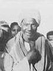
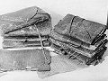
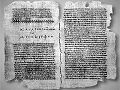

L'ICPA est une association privée créée par des amis et des collègues du journaliste Jack Lorski au lendemain de l'annonce de son meurtre en Écosse. Son seul but est d'aider les services de police et de justice internationaux à mettre fin le plus tôt possible aux agissements criminels du Phoenix.
SKL NETWORK est l'agence qui employait Jack Lorski. Elle a reçu et rendu public les deux CD-Roms envoyés par le Phoenix.
LIBERATION.FR a publié plusieurs articles sur l'affaire du Phoenix. Utilisez son moteur de recherches pour accéder à ses archives.
LE CODEX 14 DE NAG HAMMADI
Les enquêteurs ont cru longtemps que la seule motivation du Phoenix était d'assouvir une double vengeance contre la société secrète Manus Domini : venger le professeur Peter Volker, assassiné en 1975 par des sbires de cette organisation, et venger le philosophe Giordano Bruno, brûlé vif en 1600 par l'Inquisition dont Manus Domini est une résurgence. Cependant, le meurtre d'Alex Borgo a prouvé que le Phoenix poursuit un autre but bien plus important à ses yeux : retrouver et s'emparer d'un vieux manuscrit découvert en 1945 à Nag Hammadi et connu sous le nom de « codex 14 ».
Pour bien comprendre pourquoi le tueur s'intéresse tant à ce livre qu'il qualifie lui-même de maudit, nous vous rappelons ci-dessous l'historique de sa découverte et la liste de ses différents propriétaires.
- Historique de la découverte des codex de Nag Hammadi
En décembre 1945, près de la ville de Nag Hammadi en Égypte, Mohammed Ali Samman (Photo 1), un paysan égyptien, déterre fortuitement une jarre contenant plusieurs codex de papyrus, des volumes reliés à plat comme nos livres et recouverts de cuir (Photo 2). Il vient de faire l'une des plus formidables découvertes de manuscrits anciens du XXe siècle.
Dans un état de conservation variable, les centaines de pages inscrites renferment plus d'une cinquantaine d'œuvres différentes, la plupart inconnues, dont le fameux Évangile selon Thomas, un recueil de paroles de Jésus. Il s'agit de textes religieux, généralement décrits comme gnostiques. Probablement rédigés initialement en grec, au cours des Ier et IIe siècles, la plupart de ces textes sont ensuite traduits en copte, la langue de l'Égypte de cette époque. Vers le milieu du IVe siècle, ils sont copiés dans des codex qui sont finalement enfouis dans une jarre au début du Ve siècle.Cette découverte est d'un intérêt inestimable, que ce soit pour l'histoire du livre, dont les codex de Nag Hammadi constituent les plus anciens spécimens, pour l'histoire de la langue et de la paléographie coptes, ou pour celle de la philosophie et du christianisme naissant.
Ces textes ressuscitent en effet pour nous les formes du christianisme primitif que la tradition postérieure a combattues et s'est efforcée de faire disparaître, mais qui jouèrent néanmoins un rôle essentiel dans sa formation. Leur édition, leur traduction dans des langues modernes et leur étude, qui en est encore à ses débuts, ouvrent donc une fenêtre nouvelle sur la période des Ier et IIe siècles, si importante dans la formation du christianisme. Toutefois, l'interprétation de ces textes nouveaux est particulièrement difficile. On ignore en effet l'identité de leurs auteurs, les lieux, les dates et les circonstances de leur rédaction en grec, de leur transmission, de leur traduction en copte et de leur copie dans les codex mis au jour en 1945. De laborieuses recherches permettent néanmoins de les situer dans leur contexte et d'en tirer de nombreux renseignements qui éclairent l'histoire des premiers siècles chrétiens sous un jour nouveau. Ainsi, pour ne donner qu'un seul exemple, l'Évangile selon Thomas est devenu une pièce maîtresse de la recherche sur le personnage historique de Jésus et sur les origines du christianisme.
- L'itinéraire « maudit » du codex 14
De l'aveu même de Mohammed Ali Samman, certains papyrus retrouvés à Nag Hammadi ont été perdus, jetés et même brûlés, on ne saura donc jamais exactement combien de codex étaient cachés dans la jarre. Officiellement, à ce jour, 13 codex ont été recensés et étudiés, mais on sait que peu de temps après leur découverte, tous les manuscrits ont été vendus au marché noir, il est donc probable que l'actuelle bibliothèque de Nag Hammadi n'est pas complète et que des livres supplémentaires se promènent encore dans la nature.
C'est d'ailleurs le cas du codex 14 qui intéresse tant le Phoenix. À ce jour, ce livre mystérieux n'est jamais sorti du marché parallèle des manuscrits anciens connu seulement de quelques initiés, et son contenu n'a donc jamais pu être porté à la connaissance des historiens et des scientifiques. Depuis 1945, son incroyable itinéraire, retracé et classé ci-dessous selon ses différents propriétaires, est parsemé d'énigmes et de morts violentes dont le nombre ne cesse de croître depuis que le Phoenix a décidé de s'en emparer.
• Mohammed Ali Samman
À l'époque de sa découverte, Mohammed Ali Samman est mêlé à une histoire de vendetta à la suite du meurtre de son père. Décidés à le venger, ses frères et lui assassinent quelques semaines plus tard Ahmed Ismail, le coupable, de passage dans la région. Craignant les représailles de la police, le paysan égyptien décide alors de se débarasser des codex dont il ignore totalement la valeur marchande et historique.
• Bahij Ali
La collection est alors partagée en trois parties : la première est récupérée par le religieux Al-Qummus Basiliyus Abdel Masih, la deuxième par l'antiquaire Albert Eid et la troisième, contenant le codex 14, par Bahij Ali, un hors-la-loi notoire, originaire du même village que celui de Samman.
• Phocion J. Tano
Très vite, cette dernière partie des codex est vendue au marché noir à Phocion J. Tano, un célèbre antiquaire chypriote du Caire. Quand le gouvernement égyptien qui veut réunir la totalité de la bibliothèque de Nag Hammadi tente de la racheter, l'antiquaire affirme qu'ils sont en la possession d'une collectionneuse italienne, Mademoiselle Dattari. Il « oublie » simplement de préciser qu'un des codex, le fameux quatorzième, d'une valeur certainement très supérieure aux autres, a été vendu dans le plus grand secret à un autre acheteur.
• Alfredo Malardi
À partir du début des années 50, le trajet du codex 14 est plus difficile à déterminer. On retrouve pourtant sa trace au moment du décès d'Alfredo Malardi, un grand collectionneur italien de livres anciens. Des lettres retrouvées dans son bureau prouvent qu'il a été en possession du précieux manuscrit ; il est même possible, voire probable, qu'il soit le mystérieux acheteur dont Phocion Tano a toujours voulu taire le nom.
Il est à noter que la mort de Malardi fut soudaine et inattendue, mais la police italienne conclût tout de même à un suicide. Certaines personnes (Jim Leroy, le Phoenix et d'autres) sont pourtant persuadées qu'il a été assassiné par une organisation secrète (Manus Domini ?) qui voulait récupérer le manuscrit à tout prix.
• Thomas A. Malko
Au cours de l'enquête sur le décès d'Alex Borgo, nous avons appris que le codex 14 fut la propriété de Thomas Anton Malko, le grand-oncle de Carolina Molikova, la neuvième victime du Phoenix. Nous savons maintenant que le manuscrit lui a été directement vendu par Alfredo Malardi, quelques jours avant sa mort.
Tout comme Malardi, Thomas Malko est mort prématurément, de manière inexpliquée, et les mêmes soupçons de meurtres que pour le collectionneur italien planent sur son décès.
• Peter Volker (Photo 3)
Par le plus grand des hasards, le professeur Peter Volker, éminent spécialiste des langues anciennes, retrouve la trace du codex 14, désormais "maudit". Après plusieurs mois de transactions, il l'acquiert en 1973 par l'intermédiaire de la fille de Thomas Malko.
Volker disparaît corps et biens, deux ans plus tard, sur l'île de Rhodes (Grèce). Grâce à l'enquête effectuée en 2001 par Jack Lorski et à ses conséquences, nous avons maintenant la preuve que le professeur a été froidement exécuté par des membres de Manus Domini.
Depuis ce décès tragique, personne ne sait ce qu'il est advenu du codex 14.
La famille de Peter Volker en a-t-elle hérité secrètement ? L'organisation Manus Domini l'a-t-elle récupéré après le meurtre du professeur ? Le Phoenix affirme qu'il sait comment récupérer le codex 14, mais comment a-t-il pu le retrouver ? Et surtout, que peut contenir ce codex 14 qui semble justifier à lui seul tant de malheurs ? Un écrit plus important que le codex II, contenant l'Évangile selon Thomas (Photo 4) ? Une révélation si importante qu'elle attise mille convoitises, stigmatise ceux qui s'y intéressent… et tue ceux qui s'en approchent ?
Le codex 14 est certainement la clé de toute cette affaire, dite du Phoenix, et peut-être d'autres, beaucoup plus anciennes, mais à l'instar de Pandore, quelle porte cette clé maléfique ouvre-t-elle ?
- Liens
• La bibliothèque de Nag Hammadi
• Site personnel de Jim Leroy
• Site de l'Institut Volker